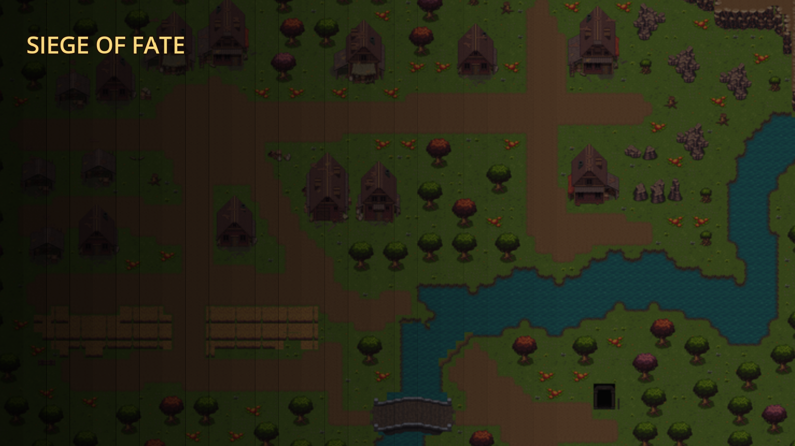

เกมต้องใช้การเร่งความเร็วกราฟิก (WebGL2) ของเบราว์เซอร์ — ตัวเกมไม่ได้เสีย แค่ต้องเปิดค่านี้ก่อน
chrome://settings/system (Edge ใช้ edge://settings/system)
แล้วเปิด “ใช้การเร่งความเร็วกราฟิกเมื่อพร้อมใช้งาน” → ปิดเปิดเบราว์เซอร์ใหม่chrome://gpu บรรทัด WebGL2 ต้องขึ้น Hardware acceleratedchrome://flags ค้นคำว่า ignore-gpu-blocklist ตั้งเป็น Enabled แล้วกด Relaunch
ทดสอบว่าเครื่องรองรับจริงไหม: get.webgl.org/webgl2
(ถ้าหน้านั้นไม่ขึ้นลูกบาศก์หมุน = เบราว์เซอร์ยังปิด WebGL2 อยู่)
เปิดจากลิงก์ในแอป Facebook / Line? ให้กด “เปิดด้วยเบราว์เซอร์” (Chrome / Safari) แทน
แนะนำ Chrome, Edge, Firefox หรือ Safari รุ่นใหม่ บนเครื่องที่มีการ์ดจอไม่เก่ากว่าปี 2012